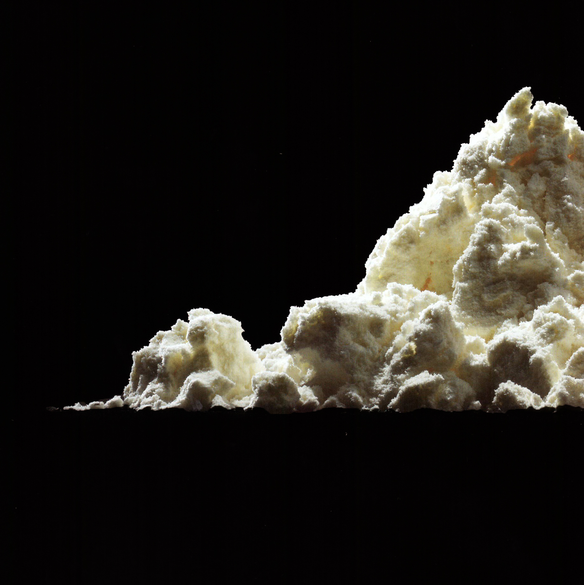

Caseinate (calcium and sodium)

9005-46-3 (Both)
Synonyms or siblings
Casein, Milk protein, Casein sodium
Funtion
Process and Prep - Emulsifier, Stabilizer, Thickening Agent
Description
Casein, sourced mainly from New Zealand and Ireland, undergoes processing into caseinates used widely in food and various industries. Originally used in products like milk paint and glue, it now plays a crucial role in food items such as doughnuts and ice cream, as well as in industries like plastics and construction, where it enhances strength and reduces water usage in concrete.
다양한 이름
카제인, 유단백질, 카제인 나트륨
기능
유화제, 안정제, 증점제
설명
카세인염은 우유의 카세인(단백질의 일종)을 산으로 침전시킨 뒤 중화하여 말린 염이다. 도넛이나 아이스크림 같은 음식물에서 단백질 강화제, 결착제, 유화제, 휘핑제로서 중요한 역할을 하며, 플라스틱과 건설 산업에서는 강도를 강화하고 콘크리트 내 수분 사용을 줄이는 데 기여한다.